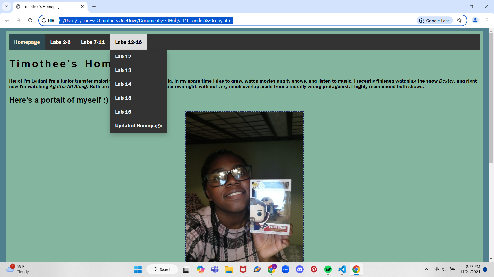
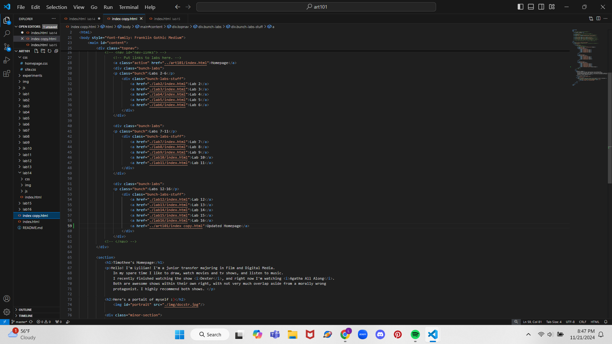

Lab 14 - Debugging Tools & Strategies
Challenge
The object of this assignment was to fix old assignments using our newfound debugging knowledge.
Problems
There were no problems with this assignment. :)
Reflection
I was able to implement a dropdown menu to my website homepage after working on it and having formatting issues.
Debugging
Working code: Problems with this code was that the height of the div would change when hovered over. After removing this property from the CSS, the dropdown worked as normal.
 